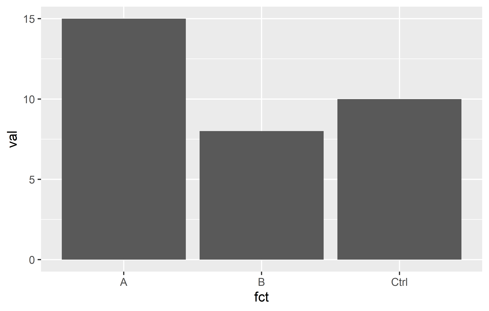
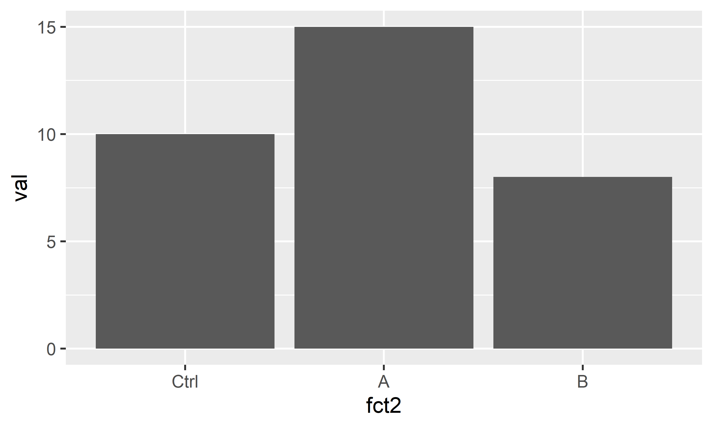
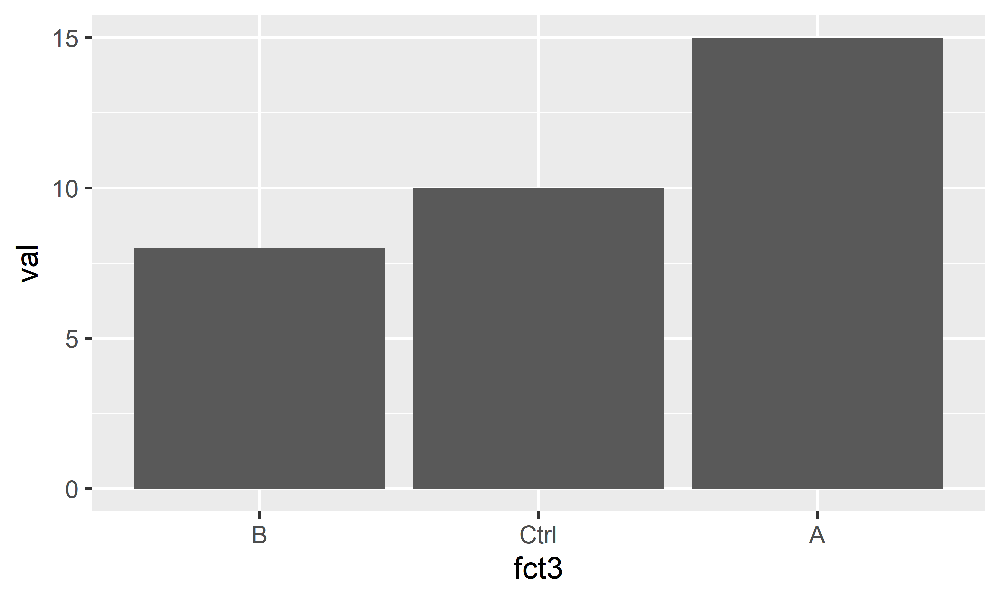

install.packages("tidyverse")
# or
pacman::p_load("tidyverse")The tidyverse
Paul Schmidt ![]()
Abstract
Pipe (%>%), Tibbles, dplyr-verbs, long/wide format and more from the tidyverse.
When using R, you will sooner or later hear about the {tidyverse}. The tidyverse is a collection of R packages that “share an underlying design philosophy, grammar, and data structures” of tidy data. The individual tidyverse packages comprise some of the most downloaded R packages.
Install the complete tidyverse with:
| ggplot2 | dplyr | tibble | forcats | stringr |
|---|---|---|---|---|
 |
 |
 |
 |
 |
I did not use the tidyverse packages in my first years using R, but I wish I did. While you can often reach your goal with or without using the tidyverse packages, I personally prefer using them. Thus, they are used extensively throughout the chapters of this website.
During the next sections I will try to explain how to use some of these packages and sometimes compare them to the Base R (= non-tidyverse) alternative.
Additional Resources (click to show)
- “R for Data Science” (Wickham and Grolemund 2017), which is a book that can be read online for free and was written by the package authors themselves.
Tables
Finally, we can now talk about data tables with rows and columns. In R, I like to think of a table as multiple vectors side by side, so that each column is a vector.
data.frame
Base R has a standard format for data tables called data.frame. Here is an example table that is an R built-in, just like pi is - it is called PlantGrowth:
PlantGrowth weight group
1 4.17 ctrl
2 5.58 ctrl
3 5.18 ctrl
4 6.11 ctrl
5 4.50 ctrl
6 4.61 ctrl
7 5.17 ctrl
8 4.53 ctrl
9 5.33 ctrl
10 5.14 ctrl
11 4.81 trt1
12 4.17 trt1
13 4.41 trt1
14 3.59 trt1
15 5.87 trt1
16 3.83 trt1
17 6.03 trt1
18 4.89 trt1
19 4.32 trt1
20 4.69 trt1
21 6.31 trt2
22 5.12 trt2
23 5.54 trt2
24 5.50 trt2
25 5.37 trt2
26 5.29 trt2
27 4.92 trt2
28 6.15 trt2
29 5.80 trt2
30 5.26 trt2Let us create a copy of this table called df (dataframe) and then use some helpful functions to get a first impression of this data:
df <- PlantGrowth
str(df)'data.frame': 30 obs. of 2 variables:
$ weight: num 4.17 5.58 5.18 6.11 4.5 4.61 5.17 4.53 5.33 5.14 ...
$ group : Factor w/ 3 levels "ctrl","trt1",..: 1 1 1 1 1 1 1 1 1 1 ...summary(df) weight group
Min. :3.590 ctrl:10
1st Qu.:4.550 trt1:10
Median :5.155 trt2:10
Mean :5.073
3rd Qu.:5.530
Max. :6.310 We can see that this dataset has 30 observations (=rows) and 2 variables (=columns) and is of the type “data.frame”. Furthermore, the first variable is called weight and contains numeric values for which we get some measures of central tendency like the minimum, maximum, mean and median. The second variable is called group and is of the type factor containing a total of three different levels, which each appear 10 times.
If you want to extract/use values of only one column of such a data.frame, you write the name of the data.frame, then a $ and finally the name of the respective column. It returns the values of that column as a vector:
df$weight [1] 4.17 5.58 5.18 6.11 4.50 4.61 5.17 4.53 5.33 5.14 4.81 4.17 4.41 3.59 5.87
[16] 3.83 6.03 4.89 4.32 4.69 6.31 5.12 5.54 5.50 5.37 5.29 4.92 6.15 5.80 5.26df$group [1] ctrl ctrl ctrl ctrl ctrl ctrl ctrl ctrl ctrl ctrl trt1 trt1 trt1 trt1 trt1
[16] trt1 trt1 trt1 trt1 trt1 trt2 trt2 trt2 trt2 trt2 trt2 trt2 trt2 trt2 trt2
Levels: ctrl trt1 trt2tibble
One major aspect of the tidyverse is formatting tables as tibble instead of data.frame. A tibble “is a modern reimagining of the data.frame, keeping what time has proven to be effective, and throwing out what is not.” It is super simple to convert a data.frame into a tibble, but you must have the tidyverse R package {tibble} installed and loaded - which it is if you are loading the entire {tidyverse}. Let us convert our df into a tibble and call it tbl:
pacman::p_load(tidyverse)
tbl <- as_tibble(df)
tbl# A tibble: 30 × 2
weight group
<dbl> <fct>
1 4.17 ctrl
2 5.58 ctrl
3 5.18 ctrl
4 6.11 ctrl
5 4.5 ctrl
6 4.61 ctrl
7 5.17 ctrl
8 4.53 ctrl
9 5.33 ctrl
10 5.14 ctrl
# … with 20 more rowsOf course, the data itself does not change - only its format and the way it is displayed to us in R. If you compare the output we get from printing tbl here to that of printing df above, I would like to point out some things I find extremely convenient for tibbles:
- There is an extra first line telling us about the number of rows and columns.
- There is an extra line below the column names telling us about the data type of each column.
- Only the first ten rows of data are printed and a “… with 20 more rows” is added below.
- It can’t be seen here, but this would analogously happen if there were too many columns.
- It can’t be seen here, but missing values
NAand negative numbers are printed in red.
Finally, note that in its heart, a tibble is still a data.frame and in most cases you can do everything with a tibble that you can do with a data.frame:
class(tbl)[1] "tbl_df" "tbl" "data.frame"str(tbl)tibble [30 × 2] (S3: tbl_df/tbl/data.frame)
$ weight: num [1:30] 4.17 5.58 5.18 6.11 4.5 4.61 5.17 4.53 5.33 5.14 ...
$ group : Factor w/ 3 levels "ctrl","trt1",..: 1 1 1 1 1 1 1 1 1 1 ...summary(tbl) weight group
Min. :3.590 ctrl:10
1st Qu.:4.550 trt1:10
Median :5.155 trt2:10
Mean :5.073
3rd Qu.:5.530
Max. :6.310 tbl$weight [1] 4.17 5.58 5.18 6.11 4.50 4.61 5.17 4.53 5.33 5.14 4.81 4.17 4.41 3.59 5.87
[16] 3.83 6.03 4.89 4.32 4.69 6.31 5.12 5.54 5.50 5.37 5.29 4.92 6.15 5.80 5.26tbl$group [1] ctrl ctrl ctrl ctrl ctrl ctrl ctrl ctrl ctrl ctrl trt1 trt1 trt1 trt1 trt1
[16] trt1 trt1 trt1 trt1 trt1 trt2 trt2 trt2 trt2 trt2 trt2 trt2 trt2 trt2 trt2
Levels: ctrl trt1 trt2class(df)[1] "data.frame"str(df)'data.frame': 30 obs. of 2 variables:
$ weight: num 4.17 5.58 5.18 6.11 4.5 4.61 5.17 4.53 5.33 5.14 ...
$ group : Factor w/ 3 levels "ctrl","trt1",..: 1 1 1 1 1 1 1 1 1 1 ...summary(df) weight group
Min. :3.590 ctrl:10
1st Qu.:4.550 trt1:10
Median :5.155 trt2:10
Mean :5.073
3rd Qu.:5.530
Max. :6.310 df$weight [1] 4.17 5.58 5.18 6.11 4.50 4.61 5.17 4.53 5.33 5.14 4.81 4.17 4.41 3.59 5.87
[16] 3.83 6.03 4.89 4.32 4.69 6.31 5.12 5.54 5.50 5.37 5.29 4.92 6.15 5.80 5.26df$group [1] ctrl ctrl ctrl ctrl ctrl ctrl ctrl ctrl ctrl ctrl trt1 trt1 trt1 trt1 trt1
[16] trt1 trt1 trt1 trt1 trt1 trt2 trt2 trt2 trt2 trt2 trt2 trt2 trt2 trt2 trt2
Levels: ctrl trt1 trt2Therefore, I almost always format my datasets as tibbles.
Plots
Base R has a plot() function which is good at getting some first data visualizations with very little code. It guesses what type of plot you would like to see via the data type of the respective data to be plotted:
plot(df$weight) # scatter plot of values in the order they appear
plot(df$group) # bar plot of frequency of each level
plot(x = df$group, y = df$weight) # boxplot for values of each level
However, I really just use plot() to get a quick first glance at data. In order to get professional visualizations I always use the tidyverse package ggplot2 and its function ggplot(). It seems like it can create any plot you can imagine and there are multiple examples with increasing complexity spread out through this website’s chapters.
Additional Resources (click to show)
- Cédric Scherer’s (2022) A ggplot2 tutorial for beautiful plotting in R
- ggplot2 extensions gallery
The pipe operator
The pipe operator “completely changed the way how we code in R, making it more simple and readable” (Álvarez 2021). I started using the pipe as %>% from the {dplyr} package1. However, since May 18, 2021 (= R 4.1.0) the pipe is officially part of Base R - although written as |>2.
To understand what makes it so great we need to start using more than one function at a time. So far, we have only used functions individually. Yet, in real life you will often find yourself having to combine multiple functions. As a fictional example, let’s say that from the PlantGrowth data, we want to extract a sorted vector of the square root of all weight-values that belong to the ctrl group. I will show three approaches how to accomplish this
No pipe - intermediate steps
Using one function at a time and saving the output in the variables a - d, we can do this:
No pipe - nesting functions
Just like in MS Excel, it is possible to write functions inside of functions so that we can do this:
Pipe!
This approach (i) allows you to write functions from left to right / top to bottom and thus in the order they are executed and the way you think about them and (ii) does not create extra variables for intermediate steps:
PlantGrowth %>%
filter(group == "ctrl") %>%
pull(weight) %>%
sqrt() %>%
round(digits = 1) %>%
sort() [1] 2.0 2.1 2.1 2.1 2.3 2.3 2.3 2.3 2.4 2.5You can think about it like this: Something (in this case the PlantGrowth data.frame) goes into the pipe and is directed to the next function filter(). By default, this function takes what came out of the previous pipe and puts it as its first argument. This happens with every pipe. You’ll notice that all the functions who required two arguments above, now only need one argument, i.e. the additional argument, because the main argument stating which data is to be used is by default simply what came out of the previous pipe. Accordingly, the functions sqrt() and sort() appear empty here, because they only need one piece of information and that is which data they should work with. Finally note that you can easily highlight only some of the lines up until one of the pipes to see the intermediate results.
Note
The keyboard shortcut for writing %>% in RStudio is CTRL+SHIFT+M. Keyboard shortcuts can be customized in RStudio as described here.
dplyr verbs
Taken directly from the documentation:
{dplyr} is a grammar of data manipulation, providing a consistent set of verbs that help you solve the most common data manipulation challenges:
mutate()adds new variables that are functions of existing variables.
select()picks variables based on their names.
filter()picks cases based on their values.
summarise()reduces multiple values down to a single summary.
arrange()changes the ordering of the rows.These all combine naturally with
group_by()which allows you to perform any operation “by group”. If you are new to dplyr, the best place to start is the data transformation chapter in R for data science (Wickham and Grolemund 2017).
In my experience you really can do most of the data manipulation before and after the actual statistics with these functions. In other words, it is exactly these functions who can and should replace the manual work you may currently even be doing in MS Excel. In the following sections I will give very brief examples of how to use these functions while always pointing to more thorough resources.
mutate()
This function is useful whenever you want to change existing columns or add new columns to your table. To keep the following examples short and simple, let’s create tbl2 as only the first six rows of tbl via the head() function:
tbl2 <- head(tbl)
tbl2# A tibble: 6 × 2
weight group
<dbl> <fct>
1 4.17 ctrl
2 5.58 ctrl
3 5.18 ctrl
4 6.11 ctrl
5 4.5 ctrl
6 4.61 ctrl Let’s start by adding 2 to the weight in our data. Below, we do this two different ways: by adding a column named new to the dataset (left) and by replacing/overwriting the original weight column (right):
tbl2 %>%
mutate(new = weight + 2)# A tibble: 6 × 3
weight group new
<dbl> <fct> <dbl>
1 4.17 ctrl 6.17
2 5.58 ctrl 7.58
3 5.18 ctrl 7.18
4 6.11 ctrl 8.11
5 4.5 ctrl 6.5
6 4.61 ctrl 6.61tbl2 %>%
mutate(weight = weight + 2)# A tibble: 6 × 2
weight group
<dbl> <fct>
1 6.17 ctrl
2 7.58 ctrl
3 7.18 ctrl
4 8.11 ctrl
5 6.5 ctrl
6 6.61 ctrl We can also create multiple columns at once (left) and make the values of the new column dynamically depend on the other columns via case_when() (right):
tbl2 %>%
mutate(
`Name with Space` = "Hello!",
number10 = 10
)# A tibble: 6 × 4
weight group `Name with Space` number10
<dbl> <fct> <chr> <dbl>
1 4.17 ctrl Hello! 10
2 5.58 ctrl Hello! 10
3 5.18 ctrl Hello! 10
4 6.11 ctrl Hello! 10
5 4.5 ctrl Hello! 10
6 4.61 ctrl Hello! 10tbl2 %>%
mutate(larger5 = case_when(
weight > 5 ~ "yes",
weight < 5 ~ "no"
))# A tibble: 6 × 3
weight group larger5
<dbl> <fct> <chr>
1 4.17 ctrl no
2 5.58 ctrl yes
3 5.18 ctrl yes
4 6.11 ctrl yes
5 4.5 ctrl no
6 4.61 ctrl no Finally, we can efficiently apply the same function to multiple columns at once via across(). We can select the columns e.g. manually via their names in a vector (left) or via a function such as is.numeric (right):
tbl2 %>%
mutate(v1 = 1, v2 = 2, v3 = 3) %>%
mutate(
across(c(v1, v2), ~ .x + 20)
)# A tibble: 6 × 5
weight group v1 v2 v3
<dbl> <fct> <dbl> <dbl> <dbl>
1 4.17 ctrl 21 22 3
2 5.58 ctrl 21 22 3
3 5.18 ctrl 21 22 3
4 6.11 ctrl 21 22 3
5 4.5 ctrl 21 22 3
6 4.61 ctrl 21 22 3tbl2 %>%
mutate(v1 = 1, v2 = 2, v3 = 3) %>%
mutate(
across(where(is.numeric), ~ .x + 20)
)# A tibble: 6 × 5
weight group v1 v2 v3
<dbl> <fct> <dbl> <dbl> <dbl>
1 24.2 ctrl 21 22 23
2 25.6 ctrl 21 22 23
3 25.2 ctrl 21 22 23
4 26.1 ctrl 21 22 23
5 24.5 ctrl 21 22 23
6 24.6 ctrl 21 22 23
Additional Resources (click to show)
select()
This function is useful whenever you want to select a subset of columns or change the order of columns. To provide better examples, let’s first create a table tbl3 with a few more columns:
tbl3 <- tbl2 %>%
mutate(var1 = 1, var2 = 2, var3 = "text", var4 = "word")
tbl3# A tibble: 6 × 6
weight group var1 var2 var3 var4
<dbl> <fct> <dbl> <dbl> <chr> <chr>
1 4.17 ctrl 1 2 text word
2 5.58 ctrl 1 2 text word
3 5.18 ctrl 1 2 text word
4 6.11 ctrl 1 2 text word
5 4.5 ctrl 1 2 text word
6 4.61 ctrl 1 2 text word We can now select individual columns manually by giving all names (left) and even select all columns from:to by writing a colon between them (right):
tbl3 %>%
select(group, var1, var4)# A tibble: 6 × 3
group var1 var4
<fct> <dbl> <chr>
1 ctrl 1 word
2 ctrl 1 word
3 ctrl 1 word
4 ctrl 1 word
5 ctrl 1 word
6 ctrl 1 word tbl3 %>%
select(group, var1:var4)# A tibble: 6 × 5
group var1 var2 var3 var4
<fct> <dbl> <dbl> <chr> <chr>
1 ctrl 1 2 text word
2 ctrl 1 2 text word
3 ctrl 1 2 text word
4 ctrl 1 2 text word
5 ctrl 1 2 text word
6 ctrl 1 2 text word We can also use functions like starts_with(), ends_with(), contains(), matches() and num_range() to select all columns based on their name:
tbl3 %>%
select(contains("r"))# A tibble: 6 × 5
group var1 var2 var3 var4
<fct> <dbl> <dbl> <chr> <chr>
1 ctrl 1 2 text word
2 ctrl 1 2 text word
3 ctrl 1 2 text word
4 ctrl 1 2 text word
5 ctrl 1 2 text word
6 ctrl 1 2 text word tbl3 %>%
select(num_range("var", 1:3))# A tibble: 6 × 3
var1 var2 var3
<dbl> <dbl> <chr>
1 1 2 text
2 1 2 text
3 1 2 text
4 1 2 text
5 1 2 text
6 1 2 text Finally, we can select based on a function like is.numeric via where() (left) or simply rearrange while keeping all columns by using everything() (right)
tbl3 %>%
select(where(is.numeric))# A tibble: 6 × 3
weight var1 var2
<dbl> <dbl> <dbl>
1 4.17 1 2
2 5.58 1 2
3 5.18 1 2
4 6.11 1 2
5 4.5 1 2
6 4.61 1 2tbl3 %>%
select(var1, everything())# A tibble: 6 × 6
var1 weight group var2 var3 var4
<dbl> <dbl> <fct> <dbl> <chr> <chr>
1 1 4.17 ctrl 2 text word
2 1 5.58 ctrl 2 text word
3 1 5.18 ctrl 2 text word
4 1 6.11 ctrl 2 text word
5 1 4.5 ctrl 2 text word
6 1 4.61 ctrl 2 text word
Additional Resources (click to show)
filter()
This function is useful whenever you want to subset rows based on their values. Note that for the examples here, we use the original tbl with 30 observations.
Let’s immediately filter for two conditions: Observations that belong to group trt2 and are larger than 6 (left); Observations that are larger than 6 or smaller than 4 (right):
tbl %>%
filter(weight > 6 & group == "trt2")# A tibble: 2 × 2
weight group
<dbl> <fct>
1 6.31 trt2
2 6.15 trt2 tbl %>%
filter(weight > 6 | weight < 4)# A tibble: 6 × 2
weight group
<dbl> <fct>
1 6.11 ctrl
2 3.59 trt1
3 3.83 trt1
4 6.03 trt1
5 6.31 trt2
6 6.15 trt2 We can also filter for values that are not of the ctrl group (left) or that are larger than the mean weight (right):
tbl %>%
filter(group != "ctrl")# A tibble: 20 × 2
weight group
<dbl> <fct>
1 4.81 trt1
2 4.17 trt1
3 4.41 trt1
4 3.59 trt1
5 5.87 trt1
6 3.83 trt1
7 6.03 trt1
8 4.89 trt1
9 4.32 trt1
10 4.69 trt1
11 6.31 trt2
12 5.12 trt2
13 5.54 trt2
14 5.5 trt2
15 5.37 trt2
16 5.29 trt2
17 4.92 trt2
18 6.15 trt2
19 5.8 trt2
20 5.26 trt2
Additional Resources (click to show)
- 5.2 Filter rows with filter() in R for data science (Wickham and Grolemund 2017)
- Subset rows using column values with filter()
arrange()
This function is useful whenever you want to sort rows based on their values. Note that for the examples here, we use the original tbl with 30 observations. You’ll notice that I’ve added print(n = Inf) so that R shows all rows of our resulting tibble, since by default R will only show the first 10 rows if a tibble has more than 20 rows.
We can arrange by one column (left) or multiple columns (right). Note that by default values are sorted in ascending order, but this can be changed by using desc() (right). Furthermore, NA (= missing values) are always sorted to the end3, even when using desc().
tbl %>%
arrange(weight) %>%
print(n = Inf)# A tibble: 30 × 2
weight group
<dbl> <fct>
1 3.59 trt1
2 3.83 trt1
3 4.17 ctrl
4 4.17 trt1
5 4.32 trt1
6 4.41 trt1
7 4.5 ctrl
8 4.53 ctrl
9 4.61 ctrl
10 4.69 trt1
11 4.81 trt1
12 4.89 trt1
13 4.92 trt2
14 5.12 trt2
15 5.14 ctrl
16 5.17 ctrl
17 5.18 ctrl
18 5.26 trt2
19 5.29 trt2
20 5.33 ctrl
21 5.37 trt2
22 5.5 trt2
23 5.54 trt2
24 5.58 ctrl
25 5.8 trt2
26 5.87 trt1
27 6.03 trt1
28 6.11 ctrl
29 6.15 trt2
30 6.31 trt2 tbl %>%
arrange(group, desc(weight)) %>%
print(n = Inf)# A tibble: 30 × 2
weight group
<dbl> <fct>
1 6.11 ctrl
2 5.58 ctrl
3 5.33 ctrl
4 5.18 ctrl
5 5.17 ctrl
6 5.14 ctrl
7 4.61 ctrl
8 4.53 ctrl
9 4.5 ctrl
10 4.17 ctrl
11 6.03 trt1
12 5.87 trt1
13 4.89 trt1
14 4.81 trt1
15 4.69 trt1
16 4.41 trt1
17 4.32 trt1
18 4.17 trt1
19 3.83 trt1
20 3.59 trt1
21 6.31 trt2
22 6.15 trt2
23 5.8 trt2
24 5.54 trt2
25 5.5 trt2
26 5.37 trt2
27 5.29 trt2
28 5.26 trt2
29 5.12 trt2
30 4.92 trt2
Additional Resources (click to show)
summarise()
This function can be useful whenever you want to summarise data. Yet, it is not very useful (left) unless it is paired with group_by() (right).
tbl %>%
# no group_by
summarise(my_mean = mean(weight))# A tibble: 1 × 1
my_mean
<dbl>
1 5.07tbl %>%
group_by(group) %>%
summarise(my_mean = mean(weight))# A tibble: 3 × 2
group my_mean
<fct> <dbl>
1 ctrl 5.03
2 trt1 4.66
3 trt2 5.53You can create multiple summary output columns (left) and have multiple grouping columns (right):
tbl %>%
group_by(group) %>%
summarise(
Mean = mean(weight),
StdDev = sd(weight),
Min = min(weight),
Median = median(weight),
Max = max(weight),
n_Obs = n(),
)# A tibble: 3 × 7
group Mean StdDev Min Median Max n_Obs
<fct> <dbl> <dbl> <dbl> <dbl> <dbl> <int>
1 ctrl 5.03 0.583 4.17 5.15 6.11 10
2 trt1 4.66 0.794 3.59 4.55 6.03 10
3 trt2 5.53 0.443 4.92 5.44 6.31 10tbl %>%
mutate(larger5 = case_when(
weight > 5 ~ "yes",
weight < 5 ~ "no"
)) %>%
group_by(group, larger5) %>%
summarise(
n_Obs = n(),
Mean = mean(weight)
)# A tibble: 6 × 4
# Groups: group [3]
group larger5 n_Obs Mean
<fct> <chr> <int> <dbl>
1 ctrl no 4 4.45
2 ctrl yes 6 5.42
3 trt1 no 8 4.34
4 trt1 yes 2 5.95
5 trt2 no 1 4.92
6 trt2 yes 9 5.59Just like with mutate(), we can make use of across() to deal with multiple columns:
tbl %>%
mutate(v1 = 1, v2 = 2, v3 = 3) %>%
group_by(group) %>%
summarise(across(
where(is.numeric),
~ mean(.x)
))# A tibble: 3 × 5
group weight v1 v2 v3
<fct> <dbl> <dbl> <dbl> <dbl>
1 ctrl 5.03 1 2 3
2 trt1 4.66 1 2 3
3 trt2 5.53 1 2 3
Important
Once you used group_by() on a table, it stays grouped unless you use ungroup() on it afterwards. This was not relevant in the examples above, but you must be aware of this if you are using the grouped (summary) results for further steps, since this can lead to unexpected results. You can find an example and further resources on such unintended outcomes here.
Additional Resources (click to show)
long/wide format
Sometimes, data is referred to as being in long format or wide format. As the name suggests, long formatted tables have more rows, but fewer columns than wide formatted tables, while containing the same information. I find the easiest way to understand the two is by looking at examples like in the following image, which was taken from statology.org (2021):

Converting one format into the other is called pivoting in the tidyverse and the relevant functions pivot_longer() and pivot_wider() are provided in {tidyr}.
Note
You may have used other functions in this context. Here are some alternatives that are superseded:
-
melt()&dcast()of {data.table} -
fold()&unfold()of {databases} -
melt()&cast()of {reshape} -
melt()&dcast()of {reshape2} -
unpivot()&pivot()of {spreadsheets} -
gather()&spread()of {tidyr} < v1.0.0
The PlantGrowth data from above is actually already in long format, yet I create a version of it that is shorter (only 3 instead of 10 observations per group) and has an additional column called nr with is a running number per observation in each group:
long_dat <- PlantGrowth %>%
group_by(group) %>% # for each level in the "group" column
slice(1:3) %>% # keep only the rows 1-3
mutate(nr = 1:n(), # add a "nr" column with numbers 1 - ...
.before = "weight") %>% # add this column left of "weight" column
ungroup() # remove the grouping from aboveWe can now use pivot_wider() and create a wide formatted version of the long_dat table and save it as wide_dat. Note that the function has multiple arguments you can use, but for me it is usually enough to use names from = and values_from =. In the former you provide the name of the column whose entries should be the names of the new columns in the wide formatted data. In the latter you provide the name of the column whose values should be written in the new columns in the wide formatted data:
long_dat# A tibble: 9 × 3
nr weight group
<int> <dbl> <fct>
1 1 4.17 ctrl
2 2 5.58 ctrl
3 3 5.18 ctrl
4 1 4.81 trt1
5 2 4.17 trt1
6 3 4.41 trt1
7 1 6.31 trt2
8 2 5.12 trt2
9 3 5.54 trt2 wide_dat <- long_dat %>%
pivot_wider(names_from = "group",
values_from = "weight")
wide_dat# A tibble: 3 × 4
nr ctrl trt1 trt2
<int> <dbl> <dbl> <dbl>
1 1 4.17 4.81 6.31
2 2 5.58 4.17 5.12
3 3 5.18 4.41 5.54We can use pivot_longer to reverse the step above, i.e. create a long formatted version of the wide_dat table. Again, the function has multiple arguments you can use, but for me it is usually enough to use cols =, names_to = and values_to =. In the first one, you provide the names of the columns who should be reduced to fewer columns with more rows. In the other two you simply give the names that the created columns should have instead of the default name and value. Note that it is sometimes easier to provide the names of columns that should not go into cols = (right) instead of the ones that should (left).
wide_dat %>%
pivot_longer(
cols = c(ctrl, trt1, trt2),
names_to = "group",
values_to = "weight"
)# A tibble: 9 × 3
nr group weight
<int> <chr> <dbl>
1 1 ctrl 4.17
2 1 trt1 4.81
3 1 trt2 6.31
4 2 ctrl 5.58
5 2 trt1 4.17
6 2 trt2 5.12
7 3 ctrl 5.18
8 3 trt1 4.41
9 3 trt2 5.54wide_dat %>%
pivot_longer(
cols = -nr,
names_to = "group",
values_to = "weight"
)# A tibble: 9 × 3
nr group weight
<int> <chr> <dbl>
1 1 ctrl 4.17
2 1 trt1 4.81
3 1 trt2 6.31
4 2 ctrl 5.58
5 2 trt1 4.17
6 2 trt2 5.12
7 3 ctrl 5.18
8 3 trt1 4.41
9 3 trt2 5.54
Additional Resources (click to show)
- 12.3 Pivoting in R for data science (Wickham and Grolemund 2017)
- Pivoting with tidyr
- tidyr cheat sheet
forcats
In my experience, R beginners really only care about the difference between factor and character variables once the factor level order is not as they want it to be - typically on the x-axis of a plot. Luckily, {forcats} can deal with this.
In the following example, we create a column fct that is a copy of the column chr, except that they are formatted as factor and character, respectively.
dat <- tribble(
~val, ~chr,
10, "Ctrl",
15, "A",
8, "B"
) %>%
mutate(fct = as.factor(chr))
ggplot(dat) +
aes(y = val, x = fct) +
geom_col()
Even though the data is sorted so that Ctrl is first, then A, then B, the x-Axis is sorted differently4. This is because factor levels are always sorted alphabetically by default. We can reorder them via different functions in {forcats}:
dat <- dat %>%
mutate(
fct2 = fct_relevel(fct, c("Ctrl", "A", "B")),
fct3 = fct_reorder(fct, val, mean)
)
str(dat)tibble [3 × 5] (S3: tbl_df/tbl/data.frame)
$ val : num [1:3] 10 15 8
$ chr : chr [1:3] "Ctrl" "A" "B"
$ fct : Factor w/ 3 levels "A","B","Ctrl": 3 1 2
$ fct2: Factor w/ 3 levels "Ctrl","A","B": 1 2 3
$ fct3: Factor w/ 3 levels "B","Ctrl","A": 2 3 1Above are just two popular examples for sorting factor levels: fct_relevel sorts the levels manually by providing a vector with the level names in the order they should appear, while fct_reorder here sorts the levels according to their respective group mean5 of the values in the val column.
You can see that it worked in the output of str(dat) above and in the plots below.
ggplot(dat) +
aes(y = val, x = fct2) +
geom_col()
ggplot(dat) +
aes(y = val, x = fct3) +
geom_col()
stringr
In computer programming, a string is traditionally a sequence of characters (or text if you will). Taken directly from the documentation:
Strings are not glamorous, high-profile components of R, but they do play a big role in many data cleaning and preparation tasks. The stringr package provide a cohesive set of functions designed to make working with strings as easy as possible. If you’re not familiar with strings, the best place to start is the chapter on strings in R for Data Science.
Below are some brief examples of {stringr} functions I use regularly. To show what they can do, let’s first create some strings6:
a_string <- " a string with irregular spaces. "
strings <-c("String 1", "String Two", "third string")To remove part of a string, use str_remove(). To replace it, use str_replace().
strings %>%
str_remove(pattern = "ing")[1] "Str 1" "Str Two" "third str"strings %>%
str_replace(pattern = "ing",
replacement = ".")[1] "Str. 1" "Str. Two" "third str."The functions str_trim() and str_squish() help remove unnecessary spaces from strings. The former removes them only from from start and end, while the latter also reduces repeated whitespace inside a string.
a_string %>%
str_trim()[1] "a string with irregular spaces."a_string %>%
str_squish()[1] "a string with irregular spaces."Finally, you can check if a pattern appears in a string, or extract part of a string:
strings %>%
str_detect(pattern = "Two")[1] FALSE TRUE FALSEstrings %>%
str_sub(start = 1, end = 4)[1] "Stri" "Stri" "thir"
Additional Resources (click to show)
- 14 Strings in R for data science (Wickham and Grolemund 2017)
- stringr cheat sheet
- Regular expressions
References
Álvarez, Adolfo. 2021. “Plumbers, Chains, and Famous Painters: The (Updated) History of the Pipe Operator in r.” Adolfo Álvarez Blog. http://adolfoalvarez.cl/blog/2021-09-16-plumbers-chains-and-famous-painters-the-history-of-the-pipe-operator-in-r/.
Bobbitt, Zach. 2021. “Long Vs. Wide Data: What’s the Difference? - Statology.” Statology Tutorials. https://www.statology.org/long-vs-wide-data/.
Scherer, Cédric. 2022. “A Ggplot2 Tutorial for Beautiful Plotting in r.” Cédric Scherer Blog. https://www.cedricscherer.com/2019/08/05/a-ggplot2-tutorial-for-beautiful-plotting-in-r/.
Wickham, Hadley, and Garrett Grolemund. 2017. R for Data Science: Import, Tidy, Transform, Visualize, and Model Data. 1st ed. O’Reilly Media, Inc.
Footnotes
But it was not the first package to use it. This blog post has a nice summary of the history of the pipe operator in R.↩︎
Note that there are some differences between
%>%and|>- find more about it e.g. here, here or here.↩︎See the additional resources below if you want it differently.↩︎
It does not make a difference here, whether we put
x = chrorx = fctin the ggplot statement.↩︎Yes, the mean in this example is not really a mean, since there is only one number per group.↩︎
Note that while I create two vectors in this example, this will work just as well with columns of a table via `table %>% mutate(new = stringrfunction(old))`↩︎